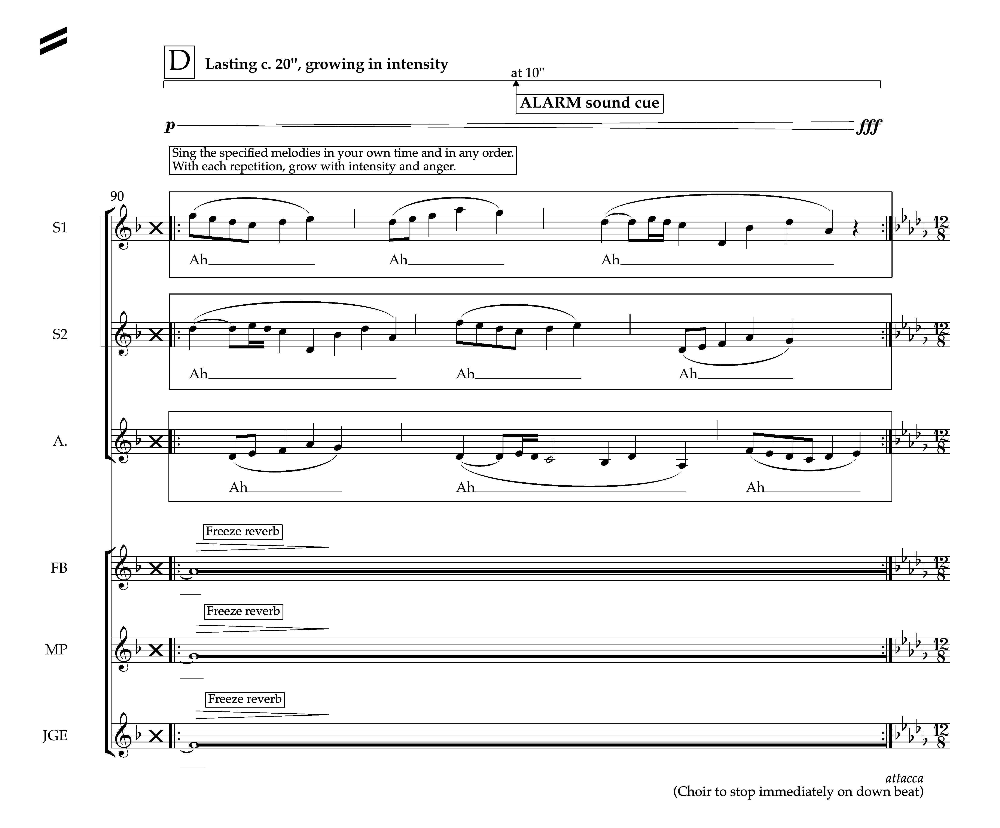

Editing
As a performer himself, Josh understands the difference that a well-edited score can make to a performance
or recording, allowing the musician to make music without having to interpret what's on the page in front of
them.

With over a decade of experience in using notation software like Dorico and Sibelius, and an in-depth
knowledge of standard editorial practice, Josh is able to produce beautiful scores up to publication
standard. Seeing the engraving process as an art in itself, he will not only ensure that music is presented
both comprehensibly and elegantly, but also take into consideration your (or your publisher's) house style.
All he needs is a copy of the score in its current form, whether that be hand-written or notated
digitally.
Whatever the demands of the score, Josh is able to find a solution. If you have something very specific in
mind but there isn't a standard way of notating it, he can create custom graphics that can precisely
articulate your intentions. You can be confident that all scores and parts produced will be well-spaced,
have sensible page turns and ultimately reflect your music in the best possible light.
Josh is able to offer the following services as standard, but is happy to consult with you on a more complex
project:
- Typesetting and engraving
- Part extraction from a master score
- Converting MIDI files to a print-ready set of score and parts
- Transcription
- Proofreading
- Digitalisation
- Copying / physical part preparation
- Orchestration
- Arrangement
When embarking on a project, you will always have a one-to-one consultation with Josh to discuss your
requirements and deadline. He is able to work to tight deadlines, where required, and will make sure to keep
you updated on the project's progress throughout its duration.
Previous clients have included:
- BBC Singers
- BBC Television
- Ben Parry
- Boston Pops Orchestra
- English Chamber Orchestra
- Kristina Arakelyan
- National Youth Choirs of Great Britain
- Primal Scream / Bobby Gillespie
- Ralph Allwood
- The Swingles
- Trinity College London
- Wells Cathedral Choir
All editing, engraving, compositional, arrangement and orchestration projects are carried out under the
Quinlan Edition brand.
View examples of Josh's work on Athena.